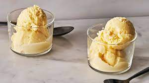

Mix milk and cream in a medium saucepan. Warm until foam forms around the edges. Remove from heat.
Beat egg yolks and sugar until frothy in a large bowl. Gradually pour the warm milk into egg yolks and sugar, whisking constantly. Return mixture to saucepan; cook over medium heat, stirring with a wooden spoon until the mixture gels slightly and coats the back of the spoon. If small egg lumps begin to show, remove from heat immediately.
Pour the mixture through a sieve or fine strainer into a bowl. Cover, and chill for several hours or overnight.
Pour the mixture into an ice cream maker, and freeze according to the manufacturer's instructions. Transfer to a sealed container, and freeze until firm. If the gelato is too firm, place it in the refrigerator until it reaches the desired consistency.